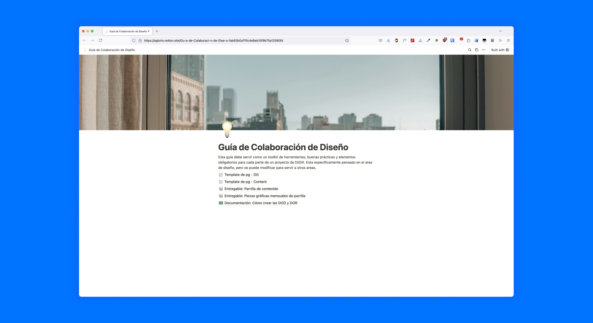

Digix was the main "ally" at Repensar Educativo's Design Ops 2023-2 course. In the course, me and my team were tasked with coming up with... something. To help them streamline their production. Some context: Digix is a digital marketing agency, focused mainly on servicing health sector clients. A few months before this project, they'd implemented a Design Ops team for the first time and needed help growing its reach and unifying the various processes to serve their clients.
Before starting work, I had to actually understand the specific needs Digix had. So my team and I carried out three research sessions with different team members. These consisted mainly of interviews and some co-creation workshops.
So, on our first research session, we spoke with the Design and Content heads, who shared their most pressing challenges they face in their area. I can't publish almost anything they mentioned, but you'll see a basic summary of what we ended up with later. Once it ended, we still felt we were lacking some important pieces though.
We decided to focus the second research session on operational topics. At this stage, we talked to graphic designers, UX experts, copywriters and art directors about their daily work. During these conversations, new ideas for improvement came up - mostly related to deliverables, deadlines, and communication with other teams. Really it was just one. They mentioned the Project Management team a lot.
So we closed the research stage with interviews with the Project Managers. They play a crucial role in communications between the client and the design team, but they were technically not a part of the Creative team. They operated separately.
From all the information we collected, we detected issues in information delivery from team to team - from the initial customer request to the delivery of the final product. In general, the operational roles in the design area mentioned they often need certain resources (like a brief or samples from previous projects with the client) before starting a project. They also showed some dissatisfaction with the clarity of the guidelines to begin their work. On the other hand, the Project Managers were, generally speaking, pretty satisfied with the design team, pointing out that they solve any issues “without them understanding how they do it,” and they mentioned that sometimes the lack of communication comes from client-side. This isn't exactly a contradiction, but it did show that designers were pressed for resources and time while the PMs were just happy the designers were still able to deal with these problems. This idea and some extra comments lead us to believe the PMs were asking the designers to complete tasks without truly considering time requirements, dependencies on other teams or the actual design process itself. We also observed that even though the design team was largely successful in delivering projects in time, they were constantly stressed and stretched thin.
So, why this mess?
We summarized the problems as simply: Communication between teams was short circuiting, and this was causing gaps and losses in the information that got passed between these different teams when developing projects.
To keep information from being lost during the regular workflow, we decided that we should deal with the problem from the start – establishing key checkpoints in the workflow to ensure that there were no problems on the handoff between teams. We'd do this via implementing Definitions of Ready and Definitions of Done within the Digix workflow, as well as client-specific documentation. Because the Digix workflow is not 100% agile and more similar to Kanban than to SCRUM, we decided that the definitions could be implemented only at key moments in their existing process. We didn’t want to change their workflow entirely, because of some unique features their team valued that weren’t entirely compatible with either of those systems.
This was a course project, so the timeline we had to develop a proposal was pretty limited. We narrowed the scope of the project to just the first stage of the most common Digix workflow. The entirety of the process is confidential, but this first stage covered all steps from the client requesting a project to the creation of the first draft of the final deliverable. Also, due to the great variety of project types that Digix handles, we chose its most common product: Content plans for social media. We focused on this because small improvements to this process would still represent high returns if implemented on a large scale.
On the other hand, we decided that any solution we proposed should be easy to replicate and scale by the DesignOps team. To ensure this, we considered that the delivery should include documentation and instructions on how we came to create the final product and the governance of each stage.
According to the folks at Atlassian,
“A Definition of Ready (DoR) allows you to Evaluate work before the team begins doing it. This defines a task, user story or story point for the team. Only when the entire team understands the scope of the project can the project be moved from the backlog to an active state.”
Taken from “What is Definition of Ready” en Atlassian.com
“A DoD is a set of criteria that must meet a product increase so that the team considers it complete and ready for clients. By clearly defining what it means"made" For the project, a team can focus on delivering value in each sprint and minimizing rework.”
Taken from “Definition of Done” en Atlassian.com
Our proposal was based on the implementation of these two definitions within the company's workflow. First by the P.Ms – before assigning tasks to the selected design team members, and then as part of the checklist used to complete a task. This task organization and assignment could be done through their Cor platform, with which the team is already familiar. According to our proposal, the day-to-day work would include these tasks:
But then, we also had to think about how to actually get this stuff done./b>
Along with the project, we created an implementation plan so that Digix can start using DoR and DoD in its work processes. The plan had 6 stages:
Call for a meeting with all team members to present the proposal and explain the importance of DoR and DoD in improving the quality of work.
Evaluate current work processes, identifying weak points and areas where rework occurs most frequently.
Adjust the template for the Definition of Ready and Definition of Done, adapted to the specific needs of the teams.
Owners: PMs, DesignOps, Art Directors, Content Leader
Estimated completion time: 3 weeks
Organize training sessions for all staff, explaining in detail the purpose and application of the DoR and DoD templates.
Owners: DesignOps
Estimated completion time: 3 weeks
Gather constant feedback from pilot teams to identify potential roadblocks and make adjustments to templates if necessary.
Owners: PM, DesignOps
Estimated completion time: 3 weeks
Establish a continuous feedback and improvement system to adjust templates as necessary.
Owners: DesignOps
Estimated completion time: 4 weeks
Make adjustments to DoR and DoD templates based on feedback and experience.
Document best practices and lessons learned during the implementation process.
Owners: DesignOps
Estimated completion time: 4 weeks
In order to evaluate whether the definitions and their implementation were successful, we proposed keeping track of an important metric: Reworks. We decided to establish a baseline before continuing. An estimate for this was obtained quickly through a self-reported survey of Digix employees, although ideally this data should be obtained in a more reliable (quantitative) way.
First, we established what we consider a rework and how much workload each one takes up. We proposed the following definition:
The task of Rework is any adjustment or modification of the deliverable that arises for any reason and that requires more than 30 minutes of work to finish it.
Currently, under that (kind of generic) metric, our baseline showed that each deliverable entailed 2.5 reworks on average - that is, 75 minutes of extra work once the deliverable is handed in.
The goal we set was to reduce the Post-Delivery Rework Index (IRPE, by its initials in Spanish) by 20% in the 3 months after the implementation of the definitions. The IRPE is measured by dividing the number of reworks after a piece is sent, divided by the total number of deliverables in a project.
The proposal was well received by the Digix team. At the end of the course, I received, along with my team, an honorary mention for the it. However, it was not fully implemented by their Design Ops team.
Regardless, we provided several recommendations to Digix in order to implement this or any other initiatives to grow the scope and impact of their Design Ops team - particularly related to the quantitative data they have on deliveries, rework, and other processes they use:
This can be achieved by including rework or revisions as “subtasks” in Cor, and will allow for better performance data to track the teams progress and make decisions.
Creating formal definitions of ready and done will save time and prevent information losses. We noticed they have informal “proto-documentation” created by some individual members of the team, but it was not shared or centralized.
Especially once they have clearer data. The process must mutate along with the company.